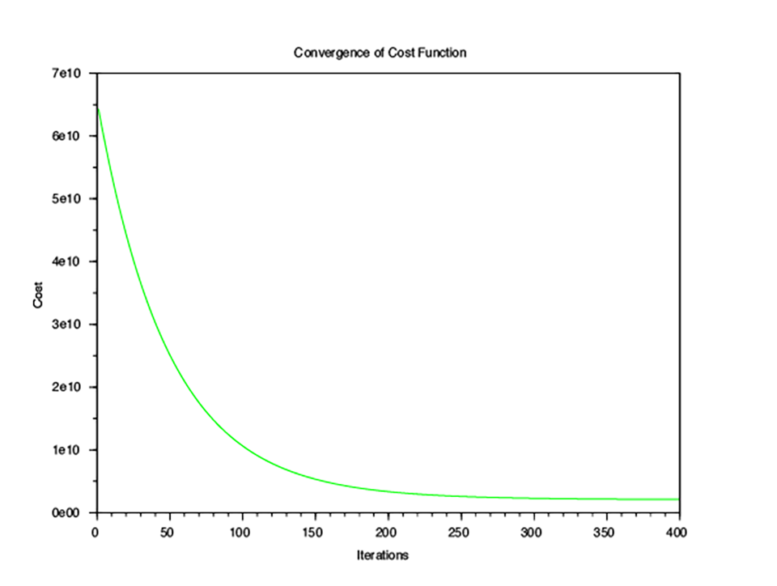

Linear Regression
Table of Contents
Introduction
Machine learning problems that are classified as regression problems are taking input variables and mapping the output to a continuous expected result function.
Univariate Linear Regression
These notes provide the basic solution for a linear regression with a single variable. Otherwise known as univariate linear regression.
Hypothesis Function
The hypothesis function is a linear equation that we use to estimate the output function. We use a series of steps later to resolve this function to within acceptable limits:
$$h_0(x) = \theta_0 + \theta_1x$$
Cost Function
We can make intial guesses for the parameters of the hypothesis function and use a cost function to measure the accuracy:
$$J(\theta_0, \theta_1) = \frac{1}{2m}\sum_{i=1}^m(h_{\theta}(x^{(i)}) - y^{(i)})^2$$
Gradient Descent Equation
Now that we have both an estimate in the form of an hypothesis function and a means to measure it's accuracy using the cost function, we need a way to automatically improve our hypothesis function. For this we use a gradient descent equation which, for the case of the linear regression simplifies to the following 2 equations.
$$\theta_0 := \theta_0 - \alpha\frac{1}{m}\sum_{i=1}^m(h_{\theta}(x^{(i)}) - y^{(i)})$$
$$\theta_1 := \theta_1 - \alpha\frac{1}{m}\sum_{i=1}^m((h_{\theta}(x^{(i)}) - y^{(i)})x^{(i)})$$
alpha is the learning rate of the gradient descent equation, and m is the size of the training set.
We can now repeat the gradient descent equation until the solution converges within an acceptable limit.
Multivariate Linear Regression
These notes provide the basic solution for a linear regression with multiple variable. Otherwise known as multivariate linear regression.
Hypothesis Function
The hypothesis function is a linear equation that we use to estimate the output function. We use a series of steps later to resolve this function to within acceptable limits.
$$h_\theta(x) = \theta_0 + \theta_1x_1 + ... + \theta_nx_n$$
Cost Function
We can make intial guesses for the parameters of the hypothesis function and use a cost function to measure the accuracy:
$$J(\theta) = \frac{1}{2m}\sum_{i=1}^m(h_{\theta}(x^{(i)}) - y^{(i)})^2$$
This can be vectorised as follows:
$$J(\theta) = \frac{1}{2m}(X\theta - \vec{y}q)^T(X\theta - \vec{y})$$
Gradient Descent Equation
Now that we have both an estimate in the form of an hypothesis function and a means to measure it's accuracy using the cost function, we need a way to automatically improve our hypothesis function. For this we use a gradient descent equation which, for the case of the linear regression simplifies to the following vectorised equation.
$$\theta := \theta - \frac{\alpha}{m}X^T(X\theta - \vec{yq})$$
alpha is the learning rate of the gradient descent equation, and m is the size of the training set.
We can now repeat the gradient descent equation until the solution converges within an acceptable limit.
Normal Equation
Alternatively, given a training set with the right variables, we can solve the linear regression in a single step with the normal equation:
$$\theta = (X^TX)^{-1}X^Ty$$
In order to do this the training set has to form a normal matrix.
Multivariate Linear Regression with Scilab
This post outlines some code written to implement a simple multivariate linear regression algorithm in Scilab. It was written whilst I was completing a course on Machine Learning to be found on Coursera. The course uses octave for most of it's examples but I chose to write it in Scilab, for reasons not really worth going into here.
First we must initialise the data from an input training set. The X matrix contains the variables and the y vector contains the results. The training set contains house prices based on house size and number of bedrooms.
1: // Initialise data 2: 3: data = csvRead('ex1data2.txt'); 4: X = data(:, 1:2); 5: y = data(:, 3); 6: m = length(y)
Next the data is normalized according to a standard distribution. This enables the algorithm to find convergence more efficiently.
7: // normalize the data 8: 9: mu = mean(X, "r"); 10: sigma = stdev(X, "r"); 11: 12: for i = 1:size(X, "c") 13: X(:,i) = (X(:,i) - mu(i)) ./ sigma(i); 14: end;
Now that the training set variable matrix is normalized, we can add the \(x_0\) variables of value 1, needed by the algorithm.
15: // add x_0 to X 16: 17: X = [ones(m, 1) X];
We can now set the parameters for the gradient descent calculations, including the number of iterations and the linear equation parameters, theta. We will also keep a record of the cost (J) at each iteration, for displaying in a graph to ensure convergence to a minimum.
18: // set parameters iterations and 19: // learning rate 20: 21: alpha = 0.01; 22: num_iters = 400; 23: theta = zeros(3, 1); 24: J_history = zeros(num_iters, 1);
We can now run the gradient descent algorithm to calculate values of theta at convergence.
25: for iter = 1:num_iters 26: hypothesis = X * theta; 27: errors = hypothesis - y; 28: change = (alpha * (X' * errors)) / m; 29: theta = theta - change; 30: 31: J_history(iter) = (sum(((X * theta) - y) .^ 2)) / (2 * m); 32: end;
Now that we have completed the gradient descent, we can plot the cost value and check that it does actually converge.
33: // plot the convergence graph 34: 35: plot(1:size(J_history, "r"), J_history, '-g', 'LineWidth', 1); 36: xtitle("Convergence of Cost Function", "Iterations", "Cost");

As we can see that the cost converges, we can now use the values of theta (and the normalization parameters) to calculate predicted house prices.
37: // Estimate the price of a 1650 sq-ft, 3 br house 38: 39: norm_area = (1650 - mu(1)) / sigma(1); 40: norm_bedrooms = (3 - mu(2)) / sigma(2); 41: price = theta(1) + (theta(2) * norm_area) + (theta(3) * norm_bedrooms);
This code should scale nicely to large numbers of variables in the linear equation and training data set.
The complete source code can be found here.